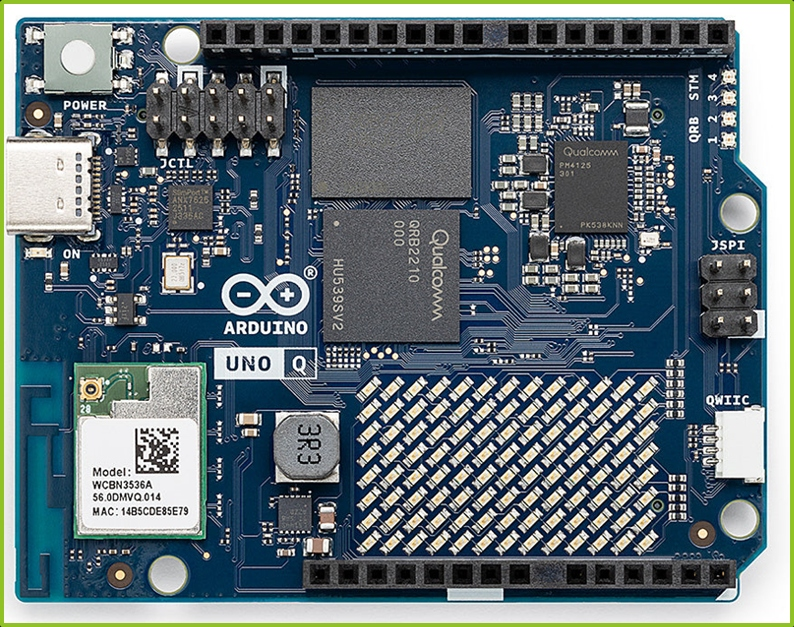

本地授權工作區
已授權讀寫
📁 D:\Test_Wugo\PCB_Bom表\
唯讀/寫入
指令提示詞 (Prompt)：
讀取 ABX00173_00.front_1000x750.jpg。辨識 PCB 上的電子元件，生成一個 excel 格式的 bom 表。
Manus Agent 思考推理日誌
Multi-modal Vision
[Step 1] 確認工作區圖片：載入
ABX00173_00.front_1000x750.jpg (解析度 1000x750)。
[Step 2] 視覺特徵提取：偵測到為 Arduino UNO Q 開發板，主控晶片具備高密度 BGA 封裝。
[Step 3] OCR 絲印比對：主處理器為 Qualcomm QRB2210，電源管理晶片為 PM4125，無線模組為 WCBN3536A。
[Step 4] 周邊與被動元件清點：辨識出 QWIIC 介面、USB Type-C、3R3 功率電感及 7x13 LED 陣列。
[Step 5] 檔案寫入完成：於資料夾內生成
ABX00173_00_front_visual_BOM.xlsx (包含 BOM 與說明雙工作表)。
PCB 元件視覺辨識熱區檢視 (點擊方框高亮 BOM 項目)
Arduino UNO Q 正面照片

SoC QRB2210
PMIC PM4125
Wi-Fi/BT
QWIIC
3R3 電感
LED Matrix
生成的 Excel BOM 表 (Worksheet: BOM)
| 項次 | 類別 | 元件 / 功能 | 可見標示或型號 | 數量 | 參考位號 | 辨識信心 | 備註 |
|---|